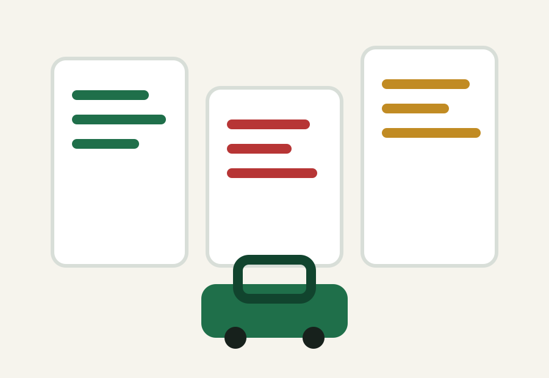

酒店攻略
2026 世界杯酒店预订攻略
世界杯酒店不只是比价格。更重要的是比赛日能否顺利去球场、赛后能否回来、是否可取消，以及离机场和城市路线是否合理。
优先选择可取消住宿
赛程、球队晋级和门票状态都会变化。早期预订尽量选择可取消房型，把灵活性放在低价之前。
不要只住球场旁边
球场附近可能比赛日方便，但餐饮、景点、机场和赛后交通未必更好。很多城市更适合住在公共交通方便、餐饮选择多的区域。
看四个指标
比较酒店时看球场交通、机场转移、周边安全和取消政策。多人同行还要确认床型、入住年龄和押金规则。
常见问题
2026 世界杯酒店应该什么时候订？
热门城市建议尽早关注可取消房型，等门票和球队路线明确后再收紧选择。
住球场附近一定最好吗？
不一定。球场附近未必适合连续旅行，交通枢纽或市中心区域有时更实用。
深度住宿专题
把酒店、门票和入境放在一起看
中文规划入口
继续规划
中文专题